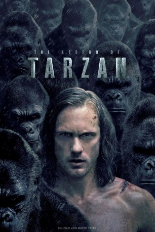

gesehen am 27.09.2016
gesehen am 27.09.2016Alternativ: The Legend of Tarzan gesehen am 27.09.2016
 
 IMDB-Wertung: 6.4 / 10
IMDB-Wertung: 6.4 / 10  Metascore:
Metascore: 
Es sind schon viele Jahre vergangen, nachdem Tarzan den afrikanischen Dschungel hinter sich gelassen hat. Jetzt lebt er unter seiner neuen Identität als britischer Adliger John Clayton III, Lord Greystoke, mit seiner geliebten Frau Jane ein standesgemäßes Leben in der Zivilisation. Eines Tages erhält er einen Auftrag direkt vom Parlament: Als Sonderbotschafter für Handelsfragen soll Tarzan zurück in den Dschungel vom Kongo geschickt werden. Noch ahnt er allerdings nicht, dass er dabei nur als Schachfigur in einer gefährlichen Intrige aus Rache und Habgier missbraucht werden soll, die der Captain Leon Rom aus Belgien eingefädelt hat. Aber auch er und die anderen Drahtzieher haben noch keinen blassen Schimmer, was für eine tödliche Lawine sie mit ihrem diabolischen Plan ins Rollen bringen.
Jahr: 2016
Dauer: 109 Minuten
FSK: 12
Land: USA Studio: Warner Bros.Tonspuren: DTS - ,
Untertitel: Deutsch, Englisch,
Auflösung: 1080p (1920x800) Größe: 8550 MB
Genre: Action, Drama, Abenteuer, Liebe
Regisseur: David Yates
Drehbuch: Cyril Gely
Soundtrack:
Darsteller:
 Alexander Skarsgård als John Clayton / Tarzan
Alexander Skarsgård als John Clayton / Tarzan Christoph Waltz als Leon Rom
Christoph Waltz als Leon Rom Samuel L. Jackson als George Washington Williams
Samuel L. Jackson als George Washington Williams Margot Robbie als Jane Clayton
Margot Robbie als Jane Clayton Osy Ikhile als Kwete
Osy Ikhile als Kwete Mens-Sana Tamakloe als Kolo
Mens-Sana Tamakloe als Kolo Ian Mercer als Freckled Force Publique
Ian Mercer als Freckled Force Publique Laurence Spellman als South African Force Publique
Laurence Spellman als South African Force Publique Clive Brunt als Senior Officer
Clive Brunt als Senior Officer Djimon Hounsou als Chief Mbonga
Djimon Hounsou als Chief Mbonga Simon Russell Beale als Mr. Frum
Simon Russell Beale als Mr. Frum John Hollingworth als Steward
John Hollingworth als Steward Miles Jupp als The Valet
Miles Jupp als The Valet Teresa Churcher als Stern Maid
Teresa Churcher als Stern Maid Jim Broadbent als Prime Minister
Jim Broadbent als Prime Minister Ben Chaplin als Captain Moulle
Ben Chaplin als Captain Moulle Genevieve O'Reilly als Tarzan's Mother
Genevieve O'Reilly als Tarzan's Mother Lasco Atkins als Mercenary , uncredited
Lasco Atkins als Mercenary , uncredited Alexander Bracq als Belgium Soldier , uncredited
Alexander Bracq als Belgium Soldier , uncredited Anthony Chisholm als Kuba Village Man , uncredited
Anthony Chisholm als Kuba Village Man , uncredited Bentley Kalu als Mbolongo Warrior , uncredited
Bentley Kalu als Mbolongo Warrior , uncredited John Samuel Kande als Shaman , uncredited
John Samuel Kande als Shaman , uncreditedDatei: X:\2016(G-M)\Legend of Tarzan (2016, FSK12, 1920x800).mkv seit 24.09.2016
Festplatte: HD 2016(A-Z)
 Es gibt insgesamt 164 Filme in der Gruppe '2016(G-M)'
Es gibt insgesamt 164 Filme in der Gruppe '2016(G-M)'